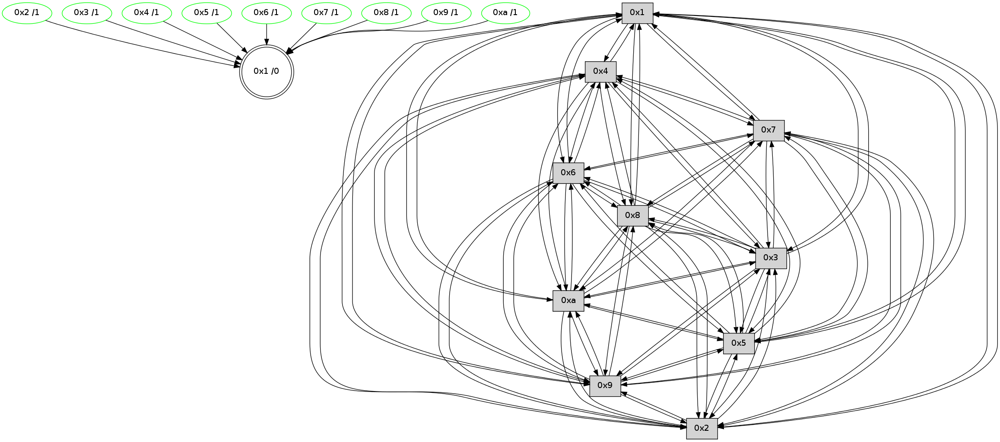

>> << IDX [start] -100 -25 -5 +0 +5 +25 +100 [495.374845982]
 Previous packets
----------------------------------------------------------------------
490.646052 beacon01(faad) #0 coord=01,02,03,04,05,06,07,0a,09,08 cycle=688.0ms assoc
-- color-indic=0 64 ec 8c
490.656035 beacon02(faad) #0 coord=01,02,03,04,05,06,07,0a,09,08 cycle=688.0ms assoc 64 7f bd
490.666035 beacon03(faad) #0 coord=01,02,03,04,05,06,07,0a,09,08 cycle=688.0ms assoc 64 05 f0
490.676034 beacon04(faad) #0 coord=01,02,03,04,05,06,07,0a,09,08 cycle=688.0ms assoc 64 72 1a
490.686034 beacon05(faad) #0 coord=01,02,03,04,05,06,07,0a,09,08 cycle=688.0ms assoc 64 08 57
490.696036 beacon06(faad) #0 coord=01,02,03,04,05,06,07,0a,09,08 cycle=688.0ms assoc 64 86 80
490.706036 beacon07(faad) #0 coord=01,02,03,04,05,06,07,0a,09,08 cycle=688.0ms assoc 64 fc cd
490.716039 beacon0a(faad) #0 coord=01,02,03,04,05,06,07,0a,09,08 cycle=688.0ms assoc 64 8d c6
490.726042 beacon09(faad) #0 coord=01,02,03,04,05,06,07,0a,09,08 cycle=688.0ms assoc 64 03 11
490.736042 beacon08(faad) #0 coord=01,02,03,04,05,06,07,0a,09,08 cycle=688.0ms assoc 64 79 5c
490.747231 [Hello(1): seq=225 sym=4,2,9,5,10,3,8,6,7 sysInfo= stat=4:15,0,4,3/2:10,0,6,4/9:8,0,6,2/5:5,0,5,3/10:10,0,4,0/3:13,0,7,4/8:3,0,7,2/6:11,0,6,0/7:3,0,6,0]
490.749953 [Hello(7): seq=316 sym=2,3,5,6,4,8,9,10,1 sysInfo= stat=2:4,0,5,4/3:15,0,6,4/5:0,0,5,3/6:0,0,5,0/4:12,0,2,2/8:1,0,4,2/9:2,0,4,2/10:15,0,4,0/1:4,0,4,0]
490.753734 [STC(7)->1 #0.9 stable,to-color d=1]
490.755024 [Hello(6): seq=316 sym=2,3,5,4,7,9,8,10,1 sysInfo= stat=2:3,0,5,2/3:3,0,4,2/5:8,0,4,2/4:5,0,3,2/7:1,0,3,0/9:5,0,4,2/8:0,0,4,2/10:15,0,4,0/1:5,0,5,0]
490.758154 [STC(6)->1 #0.9 stable,to-color d=1]
490.759979 [TreeStatus(7)-.->1 #0.9 stable child=1]
490.765670 [TreeStatus(6)-.->1 #0.9 stable child=1]
----------------------------------------------------------------------
491.434186 beacon01(faad) #0 coord=01,02,03,04,05,06,07,0a,09,08 cycle=688.0ms assoc
-- color-indic=0 64 50 89
491.444168 beacon02(faad) #0 coord=01,02,03,04,05,06,07,0a,09,08 cycle=688.0ms assoc 64 c3 b8
491.454167 beacon03(faad) #0 coord=01,02,03,04,05,06,07,0a,09,08 cycle=688.0ms assoc 64 b9 f5
491.464168 beacon04(faad) #0 coord=01,02,03,04,05,06,07,0a,09,08 cycle=688.0ms assoc 64 ce 1f
491.474168 beacon05(faad) #0 coord=01,02,03,04,05,06,07,0a,09,08 cycle=688.0ms assoc 64 b4 52
491.484171 beacon06(faad) #0 coord=01,02,03,04,05,06,07,0a,09,08 cycle=688.0ms assoc 64 3a 85
491.494169 beacon07(faad) #0 coord=01,02,03,04,05,06,07,0a,09,08 cycle=688.0ms assoc 64 40 c8
491.504173 beacon0a(faad) #0 coord=01,02,03,04,05,06,07,0a,09,08 cycle=688.0ms assoc 64 31 c3
491.514173 beacon09(faad) #0 coord=01,02,03,04,05,06,07,0a,09,08 cycle=688.0ms assoc 64 bf 14
491.524174 beacon08(faad) #0 coord=01,02,03,04,05,06,07,0a,09,08 cycle=688.0ms assoc 64 c5 59
491.535980 [Hello(10): seq=249 sym=6,3,2,8,9,5,7,4,1 sysInfo= stat=6:13,0,6,1/3:2,0,4,3/2:13,0,3,4/8:9,0,6,2/9:2,0,3,2/5:9,0,5,3/7:3,0,5,1/4:5,0,1,3/1:14,0,6,0]
491.538988 [Hello(5): seq=317 sym=7,6,4,3,1,9,8,10,2 sysInfo= stat=7:2,0,5,1/6:7,0,6,1/4:6,0,1,1/3:2,0,0,0/1:10,0,6,0/9:7,0,3,1/8:11,0,3,0/10:3,0,0,0/2:7,0,1,1]
491.541545 [Hello(3): seq=317 sym=1,7,6,2,4,8,9,10,5 sysInfo= stat=1:6,0,7,0/7:10,0,4,1/6:6,0,5,1/2:9,0,2,3/4:12,0,1,1/8:4,0,4,1/9:2,0,4,1/10:14,0,3,0/5:12,0,5,2]
491.545217 [Hello(9): seq=260 sym=5,2,3,4,7,6,8,10,1 sysInfo= stat=5:10,0,3,3/2:5,0,3,1/3:13,0,3,2/4:13,0,1,2/7:8,0,6,1/6:2,0,5,1/8:12,0,4,2/10:7,0,1,0/1:3,0,6,0]
491.553330 [Hello(4): seq=317 sym=5,7,6,2,3,9,8,10,1 sysInfo= stat=5:1,0,5,3/7:4,0,6,1/6:11,0,5,1/2:7,0,2,2/3:9,0,5,3/9:5,0,3,2/8:14,0,5,2/10:14,0,1,0/1:9,0,8,0]
491.557066 [Hello(2): seq=314 sym=4,5,7,6,3,9,8,10,1 sysInfo= stat=4:12,0,2,1/5:11,0,4,3/7:0,0,5,1/6:7,0,5,1/3:5,0,3,2/9:15,0,3,1/8:4,0,5,1/10:11,0,2,0/1:7,0,7,0]
----------------------------------------------------------------------
492.222317 beacon01(faad) #0 coord=01,02,03,04,05,06,07,0a,09,08 cycle=688.0ms assoc
-- color-indic=0 64 94 87
492.232299 beacon02(faad) #0 coord=01,02,03,04,05,06,07,0a,09,08 cycle=688.0ms assoc 64 07 b6
492.242300 beacon03(faad) #0 coord=01,02,03,04,05,06,07,0a,09,08 cycle=688.0ms assoc 64 7d fb
492.252300 beacon04(faad) #0 coord=01,02,03,04,05,06,07,0a,09,08 cycle=688.0ms assoc 64 0a 11
492.262299 beacon05(faad) #0 coord=01,02,03,04,05,06,07,0a,09,08 cycle=688.0ms assoc 64 70 5c
492.272300 beacon06(faad) #0 coord=01,02,03,04,05,06,07,0a,09,08 cycle=688.0ms assoc 64 fe 8b
492.282301 beacon07(faad) #0 coord=01,02,03,04,05,06,07,0a,09,08 cycle=688.0ms assoc 64 84 c6
492.292306 beacon0a(faad) #0 coord=01,02,03,04,05,06,07,0a,09,08 cycle=688.0ms assoc 64 f5 cd
492.302304 beacon09(faad) #0 coord=01,02,03,04,05,06,07,0a,09,08 cycle=688.0ms assoc 64 7b 1a
492.312306 beacon08(faad) #0 coord=01,02,03,04,05,06,07,0a,09,08 cycle=688.0ms assoc 64 01 57
492.324137 [Hello(1): seq=226 sym=4,2,9,5,10,3,8,6,7 sysInfo= stat=4:0,0,4,3/2:11,0,6,4/9:9,0,6,2/5:6,0,5,3/10:11,0,4,0/3:14,0,7,4/8:3,0,7,2/6:12,0,7,1/7:4,0,7,1]
492.327134 [Hello(6): seq=317 sym=2,3,5,4,7,9,8,10,1 sysInfo= stat=2:4,0,5,2/3:4,0,4,2/5:9,0,4,2/4:6,0,3,2/7:1,0,3,0/9:6,0,4,2/8:0,0,4,2/10:0,0,4,0/1:6,0,5,0]
492.331725 [Hello(7): seq=317 sym=2,3,5,6,4,8,9,10,1 sysInfo= stat=2:5,0,5,4/3:0,0,6,4/5:1,0,5,3/6:1,0,5,1/4:13,0,2,2/8:1,0,4,2/9:3,0,4,2/10:0,0,4,0/1:5,0,4,0]
----------------------------------------------------------------------
493.010449 beacon01(faad) #0 coord=01,02,03,04,05,06,07,0a,09,08 cycle=688.0ms assoc
-- color-indic=0 64 28 82
493.020431 beacon02(faad) #0 coord=01,02,03,04,05,06,07,0a,09,08 cycle=688.0ms assoc 64 bb b3
493.030432 beacon03(faad) #0 coord=01,02,03,04,05,06,07,0a,09,08 cycle=688.0ms assoc 64 c1 fe
493.040432 beacon04(faad) #0 coord=01,02,03,04,05,06,07,0a,09,08 cycle=688.0ms assoc 64 b6 14
493.050434 beacon05(faad) #0 coord=01,02,03,04,05,06,07,0a,09,08 cycle=688.0ms assoc 64 cc 59
493.060432 beacon06(faad) #0 coord=01,02,03,04,05,06,07,0a,09,08 cycle=688.0ms assoc 64 42 8e
493.070434 beacon07(faad) #0 coord=01,02,03,04,05,06,07,0a,09,08 cycle=688.0ms assoc 64 38 c3
493.080438 beacon0a(faad) #0 coord=01,02,03,04,05,06,07,0a,09,08 cycle=688.0ms assoc 64 49 c8
493.090438 beacon09(faad) #0 coord=01,02,03,04,05,06,07,0a,09,08 cycle=688.0ms assoc 64 c7 1f
493.100437 beacon08(faad) #0 coord=01,02,03,04,05,06,07,0a,09,08 cycle=688.0ms assoc 64 bd 52
493.111606 [Hello(8): seq=261 sym=5,2,3,4,7,6,9,10,1 sysInfo= stat=5:8,0,4,2/2:3,0,3,2/3:1,0,3,3/4:8,0,1,1/7:7,0,6,1/6:15,0,6,1/9:11,0,3,1/10:6,0,1,0/1:4,0,7,0]
493.114313 [Hello(9): seq=261 sym=5,2,3,4,7,6,8,10,1 sysInfo= stat=5:10,0,3,3/2:6,0,3,1/3:13,0,3,2/4:14,0,1,2/7:9,0,6,1/6:3,0,5,1/8:12,0,4,2/10:7,0,1,0/1:4,0,6,0]
493.117302 [Hello(5): seq=318 sym=7,6,4,3,1,9,8,10,2 sysInfo= stat=7:3,0,5,1/6:8,0,6,1/4:7,0,1,1/3:3,0,0,0/1:11,0,6,0/9:8,0,3,1/8:11,0,3,0/10:3,0,0,0/2:8,0,1,1]
493.120510 [Hello(10): seq=250 sym=6,3,2,8,9,5,7,4,1 sysInfo= stat=6:14,0,6,1/3:3,0,4,3/2:14,0,3,4/8:9,0,6,2/9:3,0,3,2/5:10,0,5,3/7:4,0,5,1/4:6,0,1,3/1:15,0,6,0]
493.124676 [Hello(4): seq=318 sym=5,7,6,2,3,9,8,10,1 sysInfo= stat=5:1,0,5,3/7:5,0,6,1/6:12,0,5,1/2:8,0,2,2/3:9,0,5,3/9:5,0,3,2/8:14,0,5,2/10:14,0,1,0/1:10,0,8,0]
493.127248 [Hello(2): seq=315 sym=4,5,7,6,3,9,8,10,1 sysInfo= stat=4:12,0,2,1/5:11,0,4,3/7:1,0,5,1/6:8,0,5,1/3:5,0,3,2/9:15,0,3,1/8:4,0,5,1/10:11,0,2,0/1:8,0,7,0]
493.131105 [Hello(3): seq=318 sym=1,7,6,2,4,8,9,10,5 sysInfo= stat=1:7,0,7,0/7:11,0,4,1/6:7,0,5,1/2:10,0,2,3/4:13,0,1,1/8:4,0,4,1/9:3,0,4,1/10:14,0,3,0/5:12,0,5,2]
----------------------------------------------------------------------
493.798581 beacon01(faad) #0 coord=01,02,03,04,05,06,07,0a,09,08 cycle=688.0ms assoc
-- color-indic=0 64 1c 9a
493.808565 beacon02(faad) #0 coord=01,02,03,04,05,06,07,0a,09,08 cycle=688.0ms assoc 64 8f ab
493.818562 beacon03(faad) #0 coord=01,02,03,04,05,06,07,0a,09,08 cycle=688.0ms assoc 64 f5 e6
493.828564 beacon04(faad) #0 coord=01,02,03,04,05,06,07,0a,09,08 cycle=688.0ms assoc 64 82 0c
493.838564 beacon05(faad) #0 coord=01,02,03,04,05,06,07,0a,09,08 cycle=688.0ms assoc 64 f8 41
493.848563 beacon06(faad) #0 coord=01,02,03,04,05,06,07,0a,09,08 cycle=688.0ms assoc 64 76 96
493.858565 beacon07(faad) #0 coord=01,02,03,04,05,06,07,0a,09,08 cycle=688.0ms assoc 64 0c db
493.868569 beacon0a(faad) #0 coord=01,02,03,04,05,06,07,0a,09,08 cycle=688.0ms assoc 64 7d d0
493.878569 beacon09(faad) #0 coord=01,02,03,04,05,06,07,0a,09,08 cycle=688.0ms assoc 64 f3 07
493.888570 beacon08(faad) #0 coord=01,02,03,04,05,06,07,0a,09,08 cycle=688.0ms assoc 64 89 4a
493.899745 [Hello(6): seq=318 sym=2,3,5,4,7,9,8,10,1 sysInfo= stat=2:5,0,5,2/3:5,0,4,2/5:10,0,4,2/4:7,0,3,2/7:2,0,3,0/9:7,0,4,2/8:1,0,4,2/10:1,0,4,0/1:6,0,5,0]
493.902426 [Hello(7): seq=318 sym=2,3,5,6,4,8,9,10,1 sysInfo= stat=2:6,0,5,4/3:1,0,6,4/5:2,0,5,3/6:1,0,5,1/4:14,0,2,2/8:2,0,4,2/9:4,0,4,2/10:1,0,4,0/1:5,0,4,0]
493.905765 [Hello(1): seq=227 sym=4,2,9,5,10,3,8,6,7 sysInfo= stat=4:1,0,4,3/2:12,0,6,4/9:10,0,6,2/5:7,0,5,3/10:12,0,4,0/3:15,0,7,4/8:4,0,7,2/6:13,0,7,1/7:5,0,7,1]
493.909207 [STC(1) #0.10 to-color d=0]
----------------------------------------------------------------------
494.586714 beacon01(faad) #0 coord=01,02,03,04,05,06,07,0a,09,08 cycle=688.0ms assoc
-- color-indic=0 64 a0 9f
494.596697 beacon02(faad) #0 coord=01,02,03,04,05,06,07,0a,09,08 cycle=688.0ms assoc 64 33 ae
494.606696 beacon03(faad) #0 coord=01,02,03,04,05,06,07,0a,09,08 cycle=688.0ms assoc 64 49 e3
494.616697 beacon04(faad) #0 coord=01,02,03,04,05,06,07,0a,09,08 cycle=688.0ms assoc 64 3e 09
494.626697 beacon05(faad) #0 coord=01,02,03,04,05,06,07,0a,09,08 cycle=688.0ms assoc 64 44 44
494.636698 beacon06(faad) #0 coord=01,02,03,04,05,06,07,0a,09,08 cycle=688.0ms assoc 64 ca 93
494.646698 beacon07(faad) #0 coord=01,02,03,04,05,06,07,0a,09,08 cycle=688.0ms assoc 64 b0 de
494.656704 beacon0a(faad) #0 coord=01,02,03,04,05,06,07,0a,09,08 cycle=688.0ms assoc 64 c1 d5
494.666702 beacon09(faad) #0 coord=01,02,03,04,05,06,07,0a,09,08 cycle=688.0ms assoc 64 4f 02
494.676704 beacon08(faad) #0 coord=01,02,03,04,05,06,07,0a,09,08 cycle=688.0ms assoc 64 35 4f
494.691332 [Hello(9): seq=262 sym=5,2,3,4,7,6,8,10,1 sysInfo= stat=5:11,0,3,3/2:7,0,3,1/3:14,0,3,2/4:15,0,1,2/7:10,0,6,1/6:4,0,5,1/8:12,0,4,2/10:8,0,1,0/1:5,0,7,0]
494.693904 [Hello(3): seq=319 sym=1,7,6,2,4,8,9,10,5 sysInfo= stat=1:8,0,8,0/7:12,0,4,1/6:8,0,5,1/2:10,0,2,3/4:13,0,1,1/8:4,0,4,1/9:3,0,4,1/10:14,0,3,0/5:12,0,5,2]
494.696419 [STC(8)->1 #0.10 stable,to-color d=1]
494.697997 [STC(3)->1 #0.10 stable,to-color d=1]
494.699985 [TreeStatus(8)-.->1 #0.10 stable child=1]
494.701570 [STC(6)->1 #0.10 stable,to-color d=1]
494.703268 [TreeStatus(3)-.->1 #0.10 stable child=1]
494.704758 [STC(7)->1 #0.10 stable,to-color d=1]
494.706406 [TreeStatus(7)-.->1 #0.10 stable child=1]
494.709282 [STC(4)->1 #0.10 stable,to-color d=1]
494.712109 [Hello(10): seq=251 sym=6,3,2,8,9,5,7,4,1 sysInfo= stat=6:15,0,6,1/3:4,0,4,3/2:15,0,3,4/8:9,0,6,2/9:3,0,3,2/5:10,0,5,3/7:5,0,5,1/4:7,0,1,3/1:0,0,7,0]
494.715221 [TreeStatus(4)-.->1 #0.10 stable child=1]
494.716349 [Hello(5): seq=319 sym=7,6,4,3,1,9,8,10,2 sysInfo= stat=7:4,0,5,1/6:9,0,6,1/4:8,0,1,1/3:4,0,0,0/1:12,0,7,0/9:8,0,3,1/8:11,0,3,0/10:4,0,0,0/2:9,0,1,1]
494.719823 [STC(9)->1 #0.10 stable,to-color d=1]
494.721402 [STC(5)->1 #0.10 stable,to-color d=1]
494.723397 [TreeStatus(9)-.->1 #0.10 stable child=1]
494.725240 [TreeStatus(6)-.->1 #0.10 stable child=1]
494.730044 [TreeStatus(5)-.->1 #0.10 stable child=1]
494.731977 [STC(10)->1 #0.10 stable,to-color d=1]
494.734207 [STC(2)->1 #0.10 stable,to-color d=1]
494.735859 [TreeStatus(2)-.->1 #0.10 stable child=1]
494.738055 [TreeStatus(10)-.->1 #0.10 stable child=1]